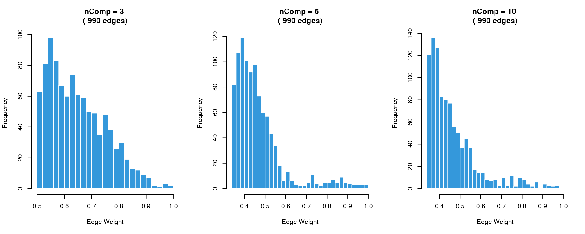
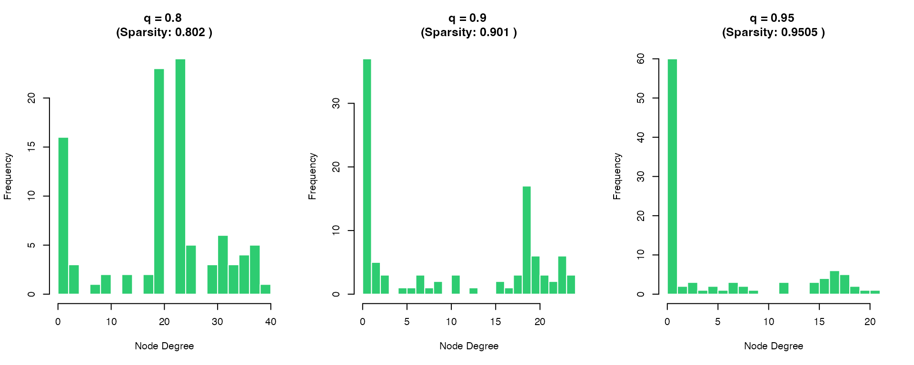
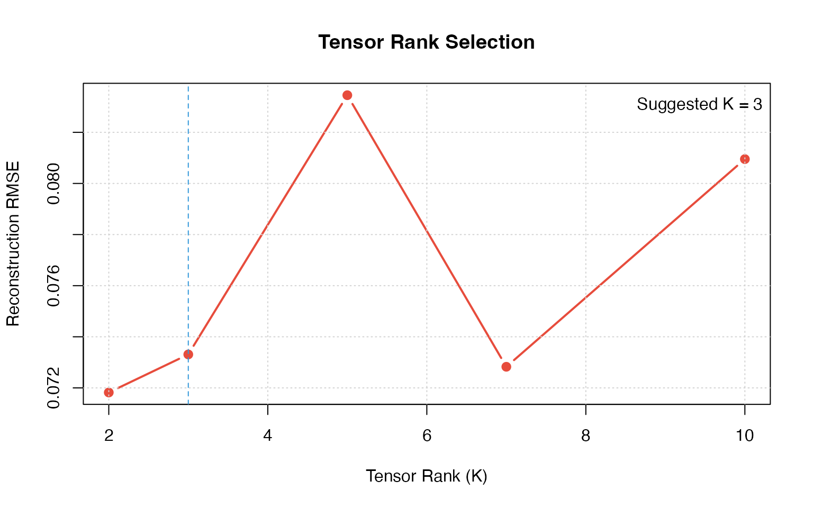
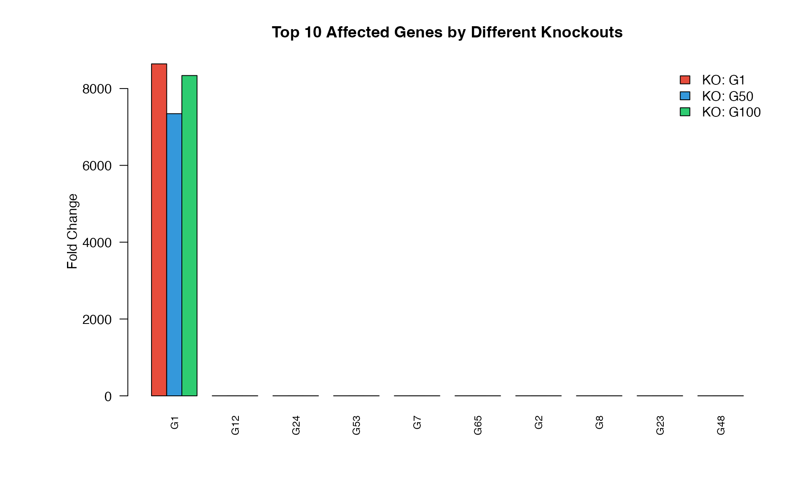

Advanced Usage and Parameter Tuning
Zaoqu Liu
2026-01-23
Source:vignettes/advanced-usage.Rmd
advanced-usage.RmdIntroduction
This vignette covers advanced usage scenarios and parameter tuning for scTenifoldKnk.
library(scTenifoldKnk)
library(Matrix)
# Load example data
data_path <- system.file("single-cell/example.csv", package = "scTenifoldKnk")
scRNAseq <- as.matrix(read.csv(data_path, row.names = 1))Parameter Reference
Main Function Parameters
| Parameter | Default | Description |
|---|---|---|
qc_mtThreshold |
0.1 | Max mitochondrial ratio |
qc_minLSize |
1000 | Min library size |
nc_nNet |
10 | Number of networks |
nc_nCells |
500 | Cells per network |
nc_nComp |
3 | Principal components |
nc_q |
0.9 | Quantile threshold |
td_K |
3 | Tensor rank |
td_maxIter |
1000 | Max iterations |
ma_nDim |
2 | Manifold dimensions |
Using Individual Functions
2. Network Construction
# Build single network
net_single <- pcNetFast(
qc_data,
nComp = 5, # More PCs for complex data
scaleScores = TRUE,
symmetric = FALSE,
q = 0.95, # Higher threshold = sparser network
verbose = FALSE
)
# Check network properties
cat("Non-zero edges:", sum(net_single != 0), "\n")
#> Non-zero edges: 495
cat("Sparsity:", round(1 - sum(net_single != 0) / length(net_single), 4), "\n")
#> Sparsity: 0.95053. Multiple Networks
# Build multiple networks for tensor decomposition
networks <- makeNetworksFast(
qc_data,
nNet = 10,
nCells = min(200, ncol(qc_data)),
nComp = 3,
q = 0.9,
nCores = 1,
verbose = FALSE,
seed = 42
)
cat("Generated", length(networks), "networks\n")
#> Generated 10 networks4. Tensor Decomposition
# Denoise networks
denoised <- tensorDecomposition(
xList = networks,
K = 3, # Tensor rank
maxIter = 500,
maxError = 1e-5,
useCpp = TRUE # Use C++ for speed
)
cat("Denoised network dimensions:", dim(denoised$X), "\n")
#> Denoised network dimensions: 100 1005. Manifold Alignment
# Prepare networks
WT <- as.matrix(denoised$X)
diag(WT) <- 0
# Create knockout
KO <- WT
KO["G50", ] <- 0
# Align manifolds
aligned <- manifoldAlignment(
Matrix(WT, sparse = TRUE),
Matrix(KO, sparse = TRUE),
d = 3 # 3D embedding
)
cat("Aligned dimensions:", dim(aligned), "\n")
#> Aligned dimensions: 200 36. Differential Regulation
# Analyze differential regulation
dr <- dRegulation(aligned, gKO = "G50")
head(dr)
#> gene distance Z FC p.value p.adj
#> G50 G50 1.840410e-04 -6.162861 7233.906098 0.0000000 0.0000000
#> G70 G70 2.592935e-06 -1.905387 1.435909 0.2308025 0.3429468
#> G74 G74 2.424365e-06 -1.292623 1.255277 0.2625470 0.3429468
#> G43 G43 2.424365e-06 -1.292623 1.255277 0.2625470 0.3429468
#> G53 G53 2.424365e-06 -1.292623 1.255277 0.2625470 0.3429468
#> G55 G55 2.424365e-06 -1.292623 1.255277 0.2625470 0.3429468Parameter Tuning Guidelines
Network Construction Parameters
# Compare different nComp values
par(mfrow = c(1, 3))
for (nc in c(3, 5, 10)) {
net <- pcNetFast(qc_data, nComp = nc, q = 0.9, verbose = FALSE)
nnz <- sum(net != 0)
# Visualize edge weight distribution
weights <- abs(net@x)
hist(weights, breaks = 30, col = "#3498DB", border = "white",
main = paste("nComp =", nc, "\n(", nnz, "edges)"),
xlab = "Edge Weight", cex.main = 1.2)
}
Quantile Threshold Effect
par(mfrow = c(1, 3))
q_values <- c(0.8, 0.9, 0.95)
for (q in q_values) {
net <- pcNetFast(qc_data, nComp = 3, q = q, verbose = FALSE)
nnz <- sum(net != 0)
sparsity <- round(1 - nnz / prod(dim(net)), 4)
# Network degree distribution
degrees <- rowSums(net != 0)
hist(degrees, breaks = 20, col = "#2ECC71", border = "white",
main = paste("q =", q, "\n(Sparsity:", sparsity, ")"),
xlab = "Node Degree", cex.main = 1.2)
}
Tensor Rank Selection
# Compare reconstruction error for different K values
networks_small <- makeNetworksFast(qc_data, nNet = 5, nCells = 100,
nComp = 3, verbose = FALSE, seed = 1)
k_values <- c(2, 3, 5, 7, 10)
errors <- numeric(length(k_values))
for (i in seq_along(k_values)) {
td <- tensorDecomposition(networks_small, K = k_values[i],
maxIter = 100, useCpp = TRUE)
# Compute reconstruction error
reconstructed <- as.matrix(td$X)
original_mean <- Reduce(`+`, lapply(networks_small, as.matrix)) / length(networks_small)
errors[i] <- sqrt(mean((reconstructed - original_mean)^2))
}
plot(k_values, errors, type = "b", pch = 19, col = "#E74C3C", lwd = 2,
xlab = "Tensor Rank (K)", ylab = "Reconstruction RMSE",
main = "Tensor Rank Selection")
grid()
# Mark elbow point
optimal_k <- k_values[which.min(diff(diff(errors)) > 0)]
abline(v = optimal_k, lty = 2, col = "#3498DB")
legend("topright", paste("Suggested K =", optimal_k), bty = "n")
Comparing Multiple Knockouts
# Compare knockouts of different genes
ko_genes <- c("G1", "G50", "G100")
ko_results <- list()
for (gene in ko_genes) {
ko_results[[gene]] <- scTenifoldKnk(
scRNAseq, gKO = gene,
qc_minLSize = 0, nc_nNet = 3, nc_nCells = 100,
verbose = FALSE
)
}
# Compare top affected genes
par(mar = c(5, 8, 4, 2))
comparison_data <- sapply(ko_genes, function(g) {
dr <- ko_results[[g]]$diffRegulation
dr$FC[1:10]
})
rownames(comparison_data) <- ko_results[[ko_genes[1]]]$diffRegulation$gene[1:10]
barplot(t(comparison_data), beside = TRUE,
col = c("#E74C3C", "#3498DB", "#2ECC71"),
las = 2,
main = "Top 10 Affected Genes by Different Knockouts",
ylab = "Fold Change",
cex.names = 0.8)
legend("topright", legend = paste("KO:", ko_genes),
fill = c("#E74C3C", "#3498DB", "#2ECC71"), bty = "n")
Performance Considerations
Memory Usage
# Estimate memory for different dataset sizes
estimate_memory <- function(n_genes, n_cells, n_networks) {
# Network matrix: n_genes x n_genes x 8 bytes (double)
net_size <- n_genes^2 * 8 / 1e6 # MB
# Total for all networks
total <- net_size * n_networks * 2 # WT + KO
return(round(total, 2))
}
sizes <- expand.grid(
genes = c(100, 500, 1000, 2000),
networks = c(5, 10, 20)
)
sizes$memory_MB <- mapply(estimate_memory, sizes$genes, 1000, sizes$networks)
knitr::kable(sizes,
col.names = c("Genes", "Networks", "Est. Memory (MB)"),
caption = "Estimated Memory Usage")| Genes | Networks | Est. Memory (MB) |
|---|---|---|
| 100 | 5 | 0.8 |
| 500 | 5 | 20.0 |
| 1000 | 5 | 80.0 |
| 2000 | 5 | 320.0 |
| 100 | 10 | 1.6 |
| 500 | 10 | 40.0 |
| 1000 | 10 | 160.0 |
| 2000 | 10 | 640.0 |
| 100 | 20 | 3.2 |
| 500 | 20 | 80.0 |
| 1000 | 20 | 320.0 |
| 2000 | 20 | 1280.0 |
Parallel Processing
# Check available cores
cat("Available cores:", parallel::detectCores(), "\n")
#> Available cores: 12
# Benchmark sequential vs parallel (if multiple cores available)
if (parallel::detectCores() > 1) {
# Sequential
t1 <- system.time({
nets1 <- makeNetworksFast(qc_data, nNet = 5, nCells = 50,
nCores = 1, verbose = FALSE)
})
# Parallel
t2 <- system.time({
nets2 <- makeNetworksFast(qc_data, nNet = 5, nCells = 50,
nCores = 2, verbose = FALSE)
})
cat("Sequential time:", round(t1[3], 2), "s\n")
cat("Parallel time:", round(t2[3], 2), "s\n")
cat("Speedup:", round(t1[3] / t2[3], 2), "x\n")
}
#> Sequential time: 0.15 s
#> Parallel time: 0.15 s
#> Speedup: 1.01 xBest Practices
Session Info
sessionInfo()
#> R version 4.4.0 (2024-04-24)
#> Platform: aarch64-apple-darwin20
#> Running under: macOS 15.6.1
#>
#> Matrix products: default
#> BLAS: /Library/Frameworks/R.framework/Versions/4.4-arm64/Resources/lib/libRblas.0.dylib
#> LAPACK: /Library/Frameworks/R.framework/Versions/4.4-arm64/Resources/lib/libRlapack.dylib; LAPACK version 3.12.0
#>
#> locale:
#> [1] C
#>
#> time zone: Asia/Shanghai
#> tzcode source: internal
#>
#> attached base packages:
#> [1] stats graphics grDevices utils datasets methods base
#>
#> other attached packages:
#> [1] Matrix_1.7-4 scTenifoldKnk_2.1.0
#>
#> loaded via a namespace (and not attached):
#> [1] cli_3.6.5 knitr_1.51 rlang_1.1.7 xfun_0.56
#> [5] otel_0.2.0 textshaping_1.0.4 jsonlite_2.0.0 htmltools_0.5.9
#> [9] ragg_1.5.0 sass_0.4.10 rmarkdown_2.30 grid_4.4.0
#> [13] evaluate_1.0.5 jquerylib_0.1.4 MASS_7.3-65 fastmap_1.2.0
#> [17] yaml_2.3.12 lifecycle_1.0.5 compiler_4.4.0 RSpectra_0.16-2
#> [21] fs_1.6.6 htmlwidgets_1.6.4 Rcpp_1.1.1 lattice_0.22-7
#> [25] systemfonts_1.3.1 digest_0.6.39 R6_2.6.1 parallel_4.4.0
#> [29] bslib_0.9.0 tools_4.4.0 pkgdown_2.1.3 cachem_1.1.0
#> [33] desc_1.4.3